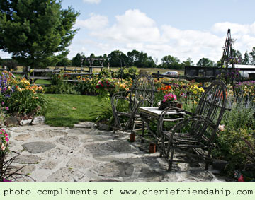

|
Rural Roots Gardens - est.
1999

We are a family run business
specializing in Registered Daylilies. We also have a large
assortment of Iris, Hosta and perennials. We take pride in
being one of the largest display gardens of registered daylilies
in The City of Kawartha Lakes - the heart of beautiful Ontario.
To purchase plants, visit Rural
Roots Gardens at 2369 County Rd. 36 (Hwy 36, between Dunsford
and Bobcaygeon at Scotch Line Rd.) or email for current availability of daylilies.
We would like to thank our many devoted customers for supporting us through the years.
Our gardens are continually changing and we hope you will be able to enjoy them by visiting.
We wish you good health, happiness and a great gardening season. |